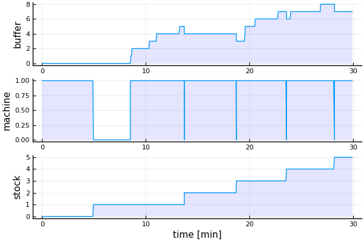

Single server
This example is from Choi, Kang: Modeling and Simulation of Discrete-Event Systems, p. 18. It describes a single server system. The event graph given is:
- Initially there are no jobs in the queue $Q$ and the machine $M$ is idle.
- Jobs arrive with an inter-arrival-time $t_a$and are added to $Q$.
- If $M$ is idle, it loads a job, changes to busy and executes the job with service time $t_s$.
- After that it changes to idle and, if $Q$ is not empty, it loads the next job.
Implementing it
We use this simple example for illustration of how it can be modeled, simulated and analyzed using Sim.jl. First we have to import the necessary modules:
using Simulate, Random, Distributions, DataFrames, Plots, LaTeXStrings
pyplot()We have to define some data structures, variables and a function for collecting stats:
abstract type MState end
struct Idle <: MState end
struct Busy <: MState end
mutable struct Job
no::Int64
ts::Float64
t1::Float64
t2::Float64
t3::Float64
end
mutable struct Machine
state::MState
job
end
Q = Job[] # input queue
S = Job[] # stock
M = Machine(Idle(), 0)
df = DataFrame(time = Float64[], buffer=Int[], machine=Int[], finished=Int[])
count = 1
printing = true
stats() = push!(df, (τ(), length(Q), M.state == Busy() ? 1 : 0, length(S)))We can model our system activity-based und therefore implement functions for the three main activities (arrive, load, unload), which call each other during simulation.
We use the arrival-function for modeling arrival rate $t_a$ with an Erlang and service time $t_s$ with a Normal distribution. We determine the capacity of the server with a $c$ variable such that $c > 1$ gives us overcapacity and $c = 1$ means that mean service time equals mean arrival rate $\bar{t_s} = \bar{t_a}$.
function arrive(μ, σ, c)
@assert μ ≥ 1 "μ must be ≥ 1"
ts = rand(Normal(μ, σ))/c
job = Job(count, ts, τ(), 0, 0)
global count += 1
push!(Q, job)
ta = rand(Erlang())*μ
event!(𝐶, SimFunction(arrive, μ, σ, c), after, ta) # we schedule the next arrival
printing ? println(τ(), ": job $(job.no) has arrived") : nothing # τ() is the current time
if M.state == Idle()
load()
else
stats()
end
end
function load()
M.state = Busy()
M.job = popfirst!(Q)
M.job.t2 = τ()
event!(𝐶, SimFunction(unload), after, M.job.ts) # we schedule the unload
printing ? println(τ(), ": job $(M.job.no) has been loaded") : nothing
stats()
end
function unload()
M.state = Idle()
M.job.t3 = τ()
push!(S, M.job)
printing ? println(τ(), ": job $(M.job.no) has been finished") : nothing
stats()
M.job = 0
if !isempty(Q)
load()
end
endWe want to collect stats() at a sample rate of 0.1:
sample_time!(𝐶, 0.1) # we determine the sample rate
Sim.sample!(𝐶, SimFunction(stats)); # we register stats() as sampling functionWe assume now that the capacity equals the arrivals and provide no overcapacity. Therefore we start with one arrival and $\mu = 5$, $\sigma = 1/5$ and $c = 1$ and let our system run for 30 minutes (let's assume our time unit be minutes):
Random.seed!(2019)
arrive(5, 1/5, 1) # we schedule the first event
run!(𝐶, 30) # and run the simulationThis will give us as output:
0: job 1 has arrived
0: job 1 has been loaded
4.947453062901819: job 1 has been finished
8.515206032139384: job 2 has arrived
8.515206032139384: job 2 has been loaded
8.56975795472613: job 3 has arrived
8.666481204359087: job 4 has arrived
10.338522593089287: job 5 has arrived
11.021099411385869: job 6 has arrived
13.267881315092211: job 7 has arrived
13.703372376147774: job 2 has been finished
13.703372376147774: job 3 has been loaded
18.726550601155594: job 3 has been finished
18.726550601155594: job 4 has been loaded
19.55941423914075: job 8 has arrived
19.58302738045451: job 9 has arrived
20.543366077813385: job 10 has arrived
22.752994020639125: job 11 has arrived
23.563550850400553: job 4 has been finished
23.563550850400553: job 5 has been loaded
23.960464112286694: job 12 has arrived
26.84742108339802: job 13 has arrived
28.18186102251928: job 5 has been finished
28.18186102251928: job 6 has been loaded
"run! finished with 17 events, simulation time: 30.0"Using our collected data, we can plot the simulation model trajectory:
function trajectory_plot()
p1 = plot(df.time, df.buffer, ylabel="buffer", fill=(0,0.1,:blue))
p2 = plot(df.time, df.machine, ylabel="machine", fill=(0,0.1,:blue))
p3 = plot(df.time, df.finished, xlabel="time [min]", ylabel="stock", fill=(0,0.1,:blue))
plot(p1,p2,p3, layout=(3,1), legend=false)
end
trajectory_plot()
It seems that the queue increases over time. Thus we are interested in the behaviour of our model over a longer time. Therefore we switch off printing and continue the simulation for further 970 "minutes".
printing = false
run!(𝐶, 970) # we continue the simulation
trajectory_plot()
It seems that buffer size is increasing ever more over time. In the plot now machine load and stock aren't very instructive, so let's compare lead time $W$ and number of jobs in the system $L = \text{buffer_size} + \text{machine_load}$:
function WvsL() # get more instructive info from simulation run
t = [j.t1 for j ∈ S]
W = [j.t3 - j.t1 for j ∈ S]
ts = [j.t3 - j.t2 for j ∈ S]
subs = [i ∈ t for i ∈ df.time]
L = (df.buffer + df.machine)[subs]
l = df.machine[subs]
DataFrame(time=t, load=l, W=W, L=L, ts=ts)
end
d = WvsL()
plot(d.time, d.W, label="W [min]", xlabel="time [min]", lw=2, legend=:topleft, title="L and W over time")
plot!(d.time, d.L, label="L [jobs]", lw=2)
Lead time $W$ and unfinished jobs $L$ are clearly increasing, the system is not stationary and gets jammed over time. Let's collect some stats:
collect_stats() =
(Lm = mean(d.L), Wm = mean(d.W), η = mean(df.machine), tsm = mean(d.ts))
collect_stats()
(Lm = 16.21105527638191, Wm = 78.8196419189297, η = 0.9778719397363466, tsm = 5.003771234356064)Server load of $\overline{η} ≈ 98\%$ is great, but the mean queue length $\overline{L}$ of $16$ and mean lead time $\overline{W} ≈ 79$ min are way too long for a service time of $t_s ≈ 5$ min. So let's analyze the dependency of mean queue length $\overline{L}$ on server capacity $c$. For that we can manipulate the server capacity in the arrival function and collect the results in a table:
df1 = DataFrame(c=Float64[], Lm=Float64[], Wm=Float64[], η=Float64[], tsm=Float64[])
for c ∈ collect(0.97:0.01:1.7)
global Q = Job[] # input queue
global S = Job[] # stock
global M = Machine(Idle(), 0)
global df = DataFrame(time = Float64[], buffer=Int[], machine=Int[], finished=Int[])
global count = 1
reset!(𝐶) # reset 𝐶
sample_time!(𝐶, 1) # set sample rate to 1
Sim.sample!(𝐶, SimFunction(stats)) # register the stats() function for sampling
Random.seed!(2019)
arrive(5, 1/5, c)
run!(𝐶, 1000) # run another simulation for 1000 "min"
global d = WvsL()
s = collect_stats()
push!(df1, (c, s.Lm, s.Wm, s.η, s.tsm))
endWe can look at it in a scatter plot:
scatter(df1.c, df1.Wm, title=L"\overline{W}"*" and "*L"\overline{L}"*" over server capacity",
xlabel="server capacity", marker = (:o, 3, 0.4, :blue), label=L"\overline{W}"*" [min]")
scatter!(df1.c, df1.Lm, marker = (:x, 4), label=L"\overline{L}"*" [jobs]")
We need to increase server capacity much in order to avoid long queues and waiting times.
How about Little's law?
$\overline{W}$ and $\overline{L}$ seem to be proportional. This is stated by Little's law:
for stationary systems with $\lambda$ = arrival rate. In our case $\lambda = t_a = 5$. Let's look at it:
scatter(df1.Lm, df1.Wm, xlabel=L"\overline{L}"*" [jobs]", ylabel=L"\overline{W}"*" [min]",
marker = (:o, 4, 0.4, :blue), label="data", title="Little's law", legend=:topleft)
plot!(df1.Lm, df1.Lm*5, label="theory "*L"(\overline{L}\times 5)")
Data seems not quite to fit theory. Reason is that the system is not stationary. But for a first approach, Little's law seems not to be a bad one. In order to analyze stability and stationarity and to improve, we could refine our analysis by taking only the second half of the simulation data or by doing more simulation runs and having some more fun with Sim.jl ...
😄
pb, 2019-11-01